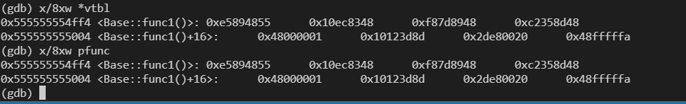
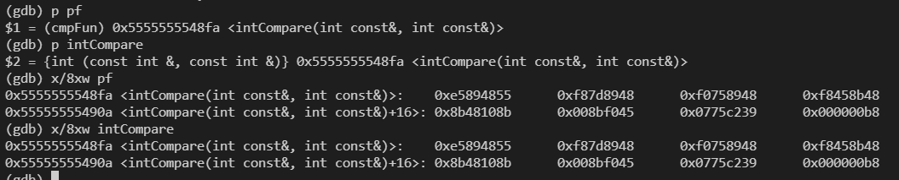
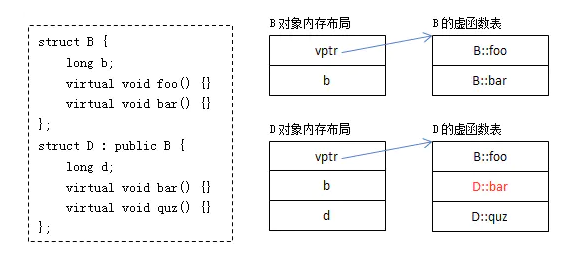

简单对象

C语言栈结构体
源代码
#include <stdio.h>
struct Test {
int a;
char b;
};
int main() {
struct Test test;
test.a = 1;
test.b = 'a';
printf("%d\n", test.a);
return 0;
}编译成汇编以及用gdb调试, 编译时注意设置-O0关闭编译优化
/// 帧指针入栈, 同时栈顶指针等于帧指针
│0x64a <main> push %rbp
│0x64b <main+1> mov %rsp,%rbp
/// rsp栈顶指针下移动开辟16字节(供main使用)
│0x64e <main+4> sub $0x10,%rsp
/// rbp下移8字节, 先赋值给test.a = 1
│0x652 <main+8> movl $0x1,-0x8(%rbp)
/// rbp下移4字节, 赋值给test.b = 'a', 'a' assci码97, 即0x61
│0x659 <main+15> movb $0x61,-0x4(%rbp)
/// rbp 下四字节给返回值寄存器%eax
│0x65d <main+19> movzbl -0x4(%rbp),%eax │
│0x661 <main+23> movsbl %al,%eax
/// 返回值寄存器eax值给第二参数%esi, 也就是第二参数为61
│0x664 <main+26> mov %eax,%esi
/// rip为指令寄存器，指向当前执行指令的下一条指令。将rip偏移地址赋给rdi(一参数寄存器)
│0x666 <main+28> lea 0x97(%rip),%rdi # 0x704
/// 返回值寄存器置0
│0x66d <main+35> mov $0x0,%eax
///callq指令完成
/// 1. 将调用函数(main)中的下一条指令(这里为0x677)入栈，被调函数返回后将取这条指令继续执行
/// 2. 修改指令指针寄存器rip的值，使其指向被调函数(add)的执行位置，这里为0x520
/// 进入prinf后
/// %rsi第二参数寄存器为0x61
│0x672 <main+40> callq 0x520 <printf@plt>
/// 返回值寄存器
│0x677 <main+45> mov $0x0,%eax
/// leaveq指令完成
/// 新的栈底指针mov %rbp, %rsp
/// pop %rbp
│0x67c <main+50> leaveq
/// 保存在栈顶的地址出栈，使程序跳到上一个函数的下一条汇编指令上运行
│0x67d <main+51> retq- 由上可见, C语言struct对象实际入栈的是struct成员变量, 且不区分struct.
- C语言结构体调用函数通过函数指针进行, 且没有命名空间保护。
#include<stdio.h>
#include<malloc.h>
struct Hello{
void (*sayHello)(char* name);
};
void sayHello(char* name){
printf("你好，%s\n",name);
}
int main(){
struct Hello hello;
hello->sayHello=sayHello;
hello->sayHello("a");
return 0;
}C++栈对象
源代码
#include <iostream>
using namespace std;
class Test {
public:
Test(int a) : a_(a) {}
void print() {
cout << a_ <<endl;
}
private:
int a_;
};
int main () {
Test test(1);
test.print();
return 0;
}汇编代码
/// 新建栈帧main
0x8fa <main()> push %rbp
│0x8fb <main()+1> mov %rsp,%rbp
/// 开辟16字节空间供main使用
│0x8fe <main()+4> sub $0x10,%rsp
│0x902 <main()+8> mov %fs:0x28,%rax
///
│0x90b <main()+17> mov %rax,-0x8(%rbp)
│0x90f <main()+21> xor %eax,%eax
/// 这里this指针已经确定了, 就是-0xc(%rbp), 先放到%rax中
│0x911 <main()+23> lea -0xc(%rbp),%rax
/// 二参数为1
│0x915 <main()+27> mov $0x1,%esi
/// 这一行,%rdi == %rax == this指针, 构造函数也是this指针执行的
│0x91a <main()+32> mov %rax,%rdi
/// 构造函数
│0x91d <main()+35> callq 0x9a8 <Test::Test(int)
/// rax存储this指针地址, 也就是-0xc(%rbp)
│0x922 <main()+40> lea -0xc(%rbp),%rax
/// 返回地址设置为this指针(第一参数), this指针也就是对象的地址
│0x926 <main()+44> mov %rax,%rdi
/// 这时候test, == %rdi == %rax
│0x929 <main()+47> callq 0x9c0 <Test::print()>
/// 返回值设置为0
│0x92e <main()+52> mov $0x0,%eax
│0x933 <main()+57> mov -0x8(%rbp),%rdx
│0x933 <main()+57> mov -0x8(%rbp),%rdx
│0x937 <main()+61> xor %fs:0x28,%rdx
│0x940 <main()+70> je 0x947 <main()+77>
│0x942 <main()+72> callq 0x7b0 <__stack_chk_fail@plt>
│0x947 <main()+77> leaveq
│0x948 <main()+78> retq以上可以看出
- 先有this指针, 根据this指针调用构造函数创建对象,this指针指向地址就是对象地址
- 根据this指针调用对象函数类似于
(Test::print, this. 其他参数)的形式。 - 对main(调用者)函数来说,
Test test()构造函数之后, 栈上会存储对象的成员变量和一个this指针, 当调用成员函数时, 和调用普通参数类似, 只是第一参数为this指针, 其他正常进入寄存器当形参。
C/C++符号优先级
:: 作用域解析(C++专有) 由左至右 结合结合性, 由左至右
- ++ 后缀递增
i++ - – 后缀递减
i-- - {} 组合
{i++;a*=i;} - () 函数调用或变量初始化
c_tor(int x, int y) : _x(x), _y(y * 10) {} - [] 数组访问
array[4] = 2; - . 以对象方式访问成员
obj.age = 34; - -> 以指针方式访问成员
ptr->age = 34; - dynamic_cast 运行时检查类型转换
Y& y = dynamic_cast<Y&>(x); - static_cast 未经检查的类型转换
Y& y = static_cast<Y&>(x); - reinterpret_cast 重定义类型转换
int const* p = reinterpret_cast<int const*>(0x1234); - const_cast 更改非常量属性(移除变量的const或volatile限定符)
int* q = const_cast<int*>(p); - typeid 获取类型信息
std::type_info const& t = typeid(x);
- 结合性由右至左
- ++ 前缀递增 ++i
由右至左 - – 前缀递减
--i
- 一元正号
int i = +1;
- 一元负号
int i = -1;
- !逻辑非
- ~ compl 按位取反
- (type) 强制类型转换
int i = (int)floatNum; - * 取指针指向的值
int data = *intPtr; - & 取变量的地址
int *intPtr = &data; - sizeof 某某的大小
size_t s = sizeof(int); - new 动态内存分配
long* pVar = new long; - new[] 动态数组内存分配
long* array = new long[20]; - delete 动态内存释放(C++专有)
delete pVar; - delete[] 动态数组内存释放(C++专有)
delete [] array;
- 结合方式 由左至右
- * 乘法
int i = 2 * 4; - / 除法
float f = 10.0 / 3.0; - % 模数(取余)
int rem = 4 % 3;
- 结合方式 由左至右
- 加法
int i = 2 + 3;
- 加法
- 减法
int i = 5 - 1;
- 减法
- 结合方式 由左至右
- << 比特左移
int flags = 33 << 1; - >> 比特右移
int flags = 33 >> 1;
- 结合方式 由左至右
- < 小于关系
if (i < 42) … - <= 小于等于关系
if (i <= 42) ... - > 大于关系
if (i > 42) … - >= 大于等于关系
if (i >= 42) ...
- ==
- != 不等于关系
- & 按位与
&的备用拼写 flag1 = flag2 & 42;
- ^ xor 按位异或
flag1 = flag2 ^ 42;
| 按位或
flag1 = flag2 | 42;
- && 逻辑 AND
|| 逻辑 OR
由右至左结合
c?t:f 三元条件运算int i = a > b ? a : b;由右至左结合
- = 直接赋值 int a = b;
- += 以和赋值 a += 3;
- -= 以差赋值 b -= 4;
- *= 以乘赋值 a *= 5;
- /= 以除赋值 a /= 2;
- %= 以取余数赋值 a %= 3;
- <<= 以比特左移赋值 flags <<= 2;
= 以比特右移赋值 flags >>= 2;
- &=
- ^=
- |=
- 左到右结合
- , 逗号运算符 for (i = 0, j = 0; i < 10; i++, j++) …
由左至右
虚函数表
某类具有虚函数, 则其对象均具有一个vptr指针指向虚函数表, 虚函数表对类所有对象共享, 但父子类具有不同的虚函数表。
- 虚函数表创建时机是在编译期间。编译期间编译器就为每个类确定好了对应的虚函数表里的内容。
- 在程序运行时，编译器会把虚函数表的首地址赋值给虚函数表指针，所以，这个虚函数表指针就有值了。
虚函数测试程序
class Base {
public:
Base() {
cout << "construct Base"<<endl;
}
virtual void f() {
cout << "Base::f"<<endl;
}
virtual void g() {
cout << "Base::g" <<endl;
}
virtual ~Base() {
cout << "destruct Base" <<endl;
}
};
class Derive : public Base {
public:
Derive() {
cout << "construct Derive"<<endl;
}
virtual void f() {
cout << "derive::f"<<endl;
}
virtual void h() {
cout << "derive::h"<<endl;
}
virtual ~Derive() {
cout << "destruct Base" <<endl;
}
};
typedef void (*func) ();
int main() {
Base base;
cout << "vptr虚指针所在地址" << &base <<endl;
cout << "将地址变为指针类型, 强制转换为了取四个字节, 这时候才是一个虚指针" << (int *)(&base) <<endl;
cout << "vptr虚指针解指针, 得到指针指向的内容, 也就是虚表首元素, 指向第一个虚函数的指针" << *(int *)(&base) <<endl;
unsigned long* vtbl = (unsigned long*)(*(unsigned long*)&base);
cout << "虚表第一个元素(一个函数指针本身,指向虚函数): " << vtbl << endl;
/// 虚函数本身(函数本身其实是一个指针)
cout << "虚函数本身: " << *vtbl << endl;
/// 虚函数本身转为函数类型并调用
func pfunc = (func)*(vtbl);
pfunc();
//delete base;
return 0;
}这里转型取
unsigned long, 大小为4字节, 范围为0 to 4,294,967,295 (2^32 - 1)。对于64位操作系统(64位操作系统指针大小为8字节)函数指针可以用typedef 声明成类型
typedef void (*func) ();,事实上函数指针和函数是等价的,函数本身也可以视为指针 , 因此不难理解*(vtbl)作为函数本身(或者说函数指令存储的首地址), 强制转型为函数指针类型(该指针也是函数指令存储的首地址),用函数指针pfunc直接调用。因此函数本身等价于函数指针, 二者都是指向函数指令。&base本身为对象地址, 用(unsigned long*)&base将地址按四字节取, 转型成一个指针, 该指针指向虚函数表, 因此(*(unsigned long*)&base)就是虚函数表地址, 同理将地址转为一个函数类型,unsigned long* vtbl = (unsigned long*)(*(unsigned long*)&base);, 这个指针指向第一个虚函数(即vtbl)指针。注意vtbl+1就是下一个虚函数, 因为+1实际上内存移动四个字节。所以*vtbl表示函数本身, 该函数本身可以转型为函数指针类型, 由函数指针调用。(函数等价于函数指针)。

上图可见, *vtbl(函数对象)和pfunc等价, 即函数指针和函数本身一致,存储的是函数本身的指令。
#include <iostream>
#include <string>
using namespace std;
// 定义函数指针pf
int (*pf)(const int&, const int&);
// 定义函数指针类型cmpFun
typedef int (*cmpFun)(const int&, const int&);
int intCompare(const int& aInt, const int& bInt)
{
if(aInt == bInt) return 0;
if(aInt > bInt)
{
return 1;
}
else
{
return -1;
}
}
int main(void) {
int aInt = 1;
int bInt = 2;
cmpFun pf = intCompare;
cout << pf(aInt, bInt)<<endl;
return 0;
}
- 函数指针和函数作用完全一致, 函数指针不是指向函数,而是和函数一样, 指向函数所在的指令。
虚函数运行时确定
- 当存在虚继承关系时, 基类和子类都会产生虚函数表。由于可能存在多态,
vtbl虚函数表使用的是基类还是子类函数在运行期确定。 - 也就是对
Base*p = new Base, 有虚函数使用基类的虚函数表, 但对Base* p = new Derive则使用子类的虚函数表, 运行构造对象时建立this指针之后, 设置vptr和vtbl才会确定。注意虚函数表是编译确定的, 运行时只会给某对象的vptr指针。

一但对象具有虚函数, 则
Base* p;并不能确定该指针指向何种对象(也可以是子对象), 显然同一种类型的不同对象, 可以有不同的vptr指针指向, 究竟怎么指, 对象创建了才知道,只根据类型是不知道的。原本编译确定了的事(对于string这些普通类型, 编译时根据类型可以不用创建对象,编译期间就给予调用函数等等的解析,但含有虚函数的必须要创建对象才行),这次要运行才确定,多了很多步骤(其实就多了加入vptr指针而已), 运行效率因此降低。虚函数效率低的主要原因是无法被深入编译优化, 甚至类因为有虚函数导致原本的优化也不行了, 其实虚函数运行时多的步骤只是创建
vptr以及查看虚函数表而已
class Base
{
public :
int base_data;
Base() { base_data = 1; }
virtual void func1() { cout << "base_func1" << endl; }
virtual void func2() { cout << "base_func2" << endl; }
virtual void func3() { cout << "base_func3" << endl; }
};
class Derive : public Base
{
public :
int derive_data;
Derive() { derive_data = 2; }
virtual void func1() { cout << "derive_func1" << endl; }
virtual void func2() { cout << "derive_func2" << endl; }
};
/// 声明一个函数指针类型
typedef void (*func)();
int main()
{
Base base;
Base base2;
Base* base3 = new Derive;
Derive derive;
for(int i=0; i<3; i++)
{
unsigned long* vtbl = (unsigned long*)(*(unsigned long*)&base) + i;
cout << "slot address: " << vtbl << endl;
cout << "func address: " << *vtbl << endl;
/// 转化成函数类型
/// base类对象, 调base类虚函数表
func pfunc = (func)*(vtbl);
pfunc();
}
cout << "----------------------------------------" << endl;
for(int i=0; i<3; i++)
{
unsigned long* vtbl = (unsigned long*)(*(unsigned long*)&base2) + i;
cout << "虚函数表slot address: " << vtbl << endl;
cout << "func address: " << *vtbl << endl;
/// base类对象, 调base类虚函数表
/// base1和base2虚函数表是一样的
func pfunc = (func)*(vtbl);
pfunc();
}
cout << "----------------------------------------" << endl;
for(int i=0; i<3; i++)
{
unsigned long* vtbl = (unsigned long*)(*(unsigned long*)&derive) + i;
cout << "derive 虚函数表slot address: " << vtbl << endl;
cout << "func address: " << *vtbl << endl;
/// derive类对象, 调derive类虚函数表
func pfunc = (func)*(vtbl);
pfunc();
}
cout << "----------------------------------------" << endl;
for(int i=0; i<3; i++)
{
unsigned long* vtbl = (unsigned long*)(*(unsigned long*)&(*base3)) + i;
cout << "虚函数表slot address: " << vtbl << endl;
cout << "func address: " << *vtbl << endl;
/// base类, derive对象, 调derive虚函数表
/// base3和derive调用的虚函数表一致
func pfunc = (func)*(vtbl);
pfunc();
}
cout << "----------------------------------------" << endl;
return 1;
}